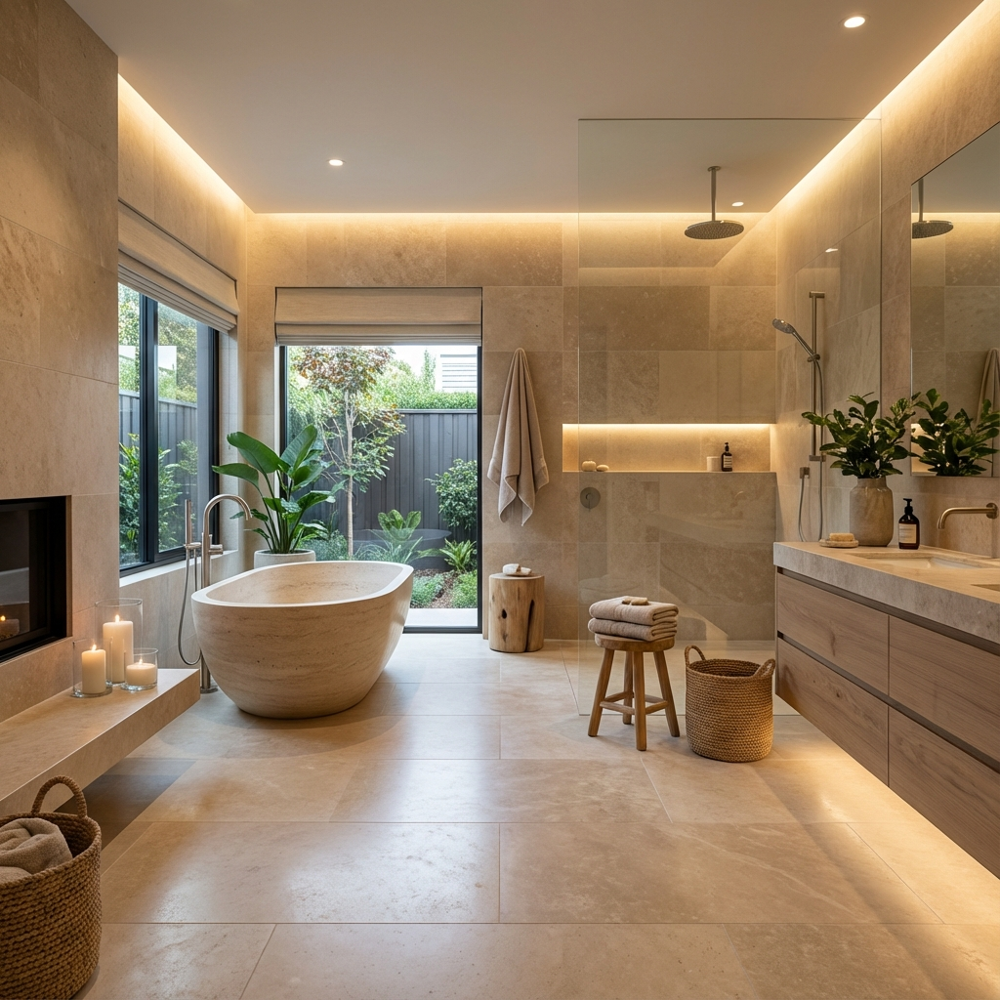

Transforming a standard bathroom into a personal spa, this project utilizes large-format beige tiles to create a seamless, expansive feel. The centerpiece is a sculptural freestanding bathtub positioned to take advantage of the natural light.
We incorporated natural wood elements in the vanity to warm up the stone surfaces. The lighting design features dimmable fixtures and a backlit mirror, ensuring the space is functional for grooming yet relaxing for a long soak.
